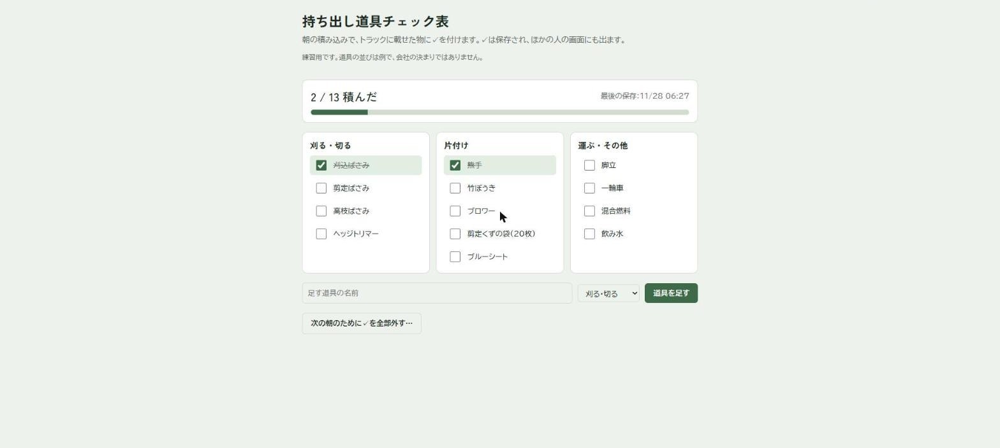
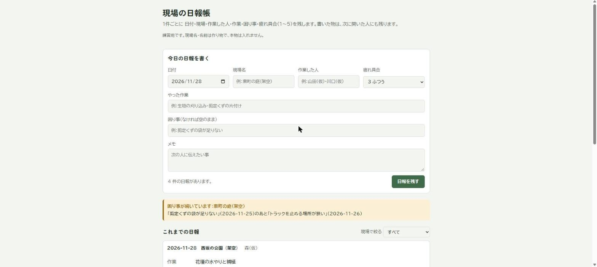
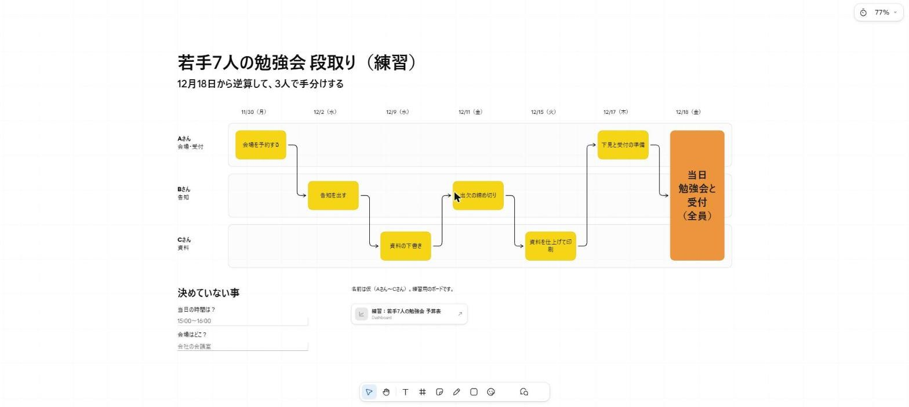
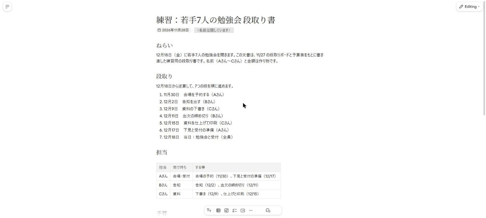
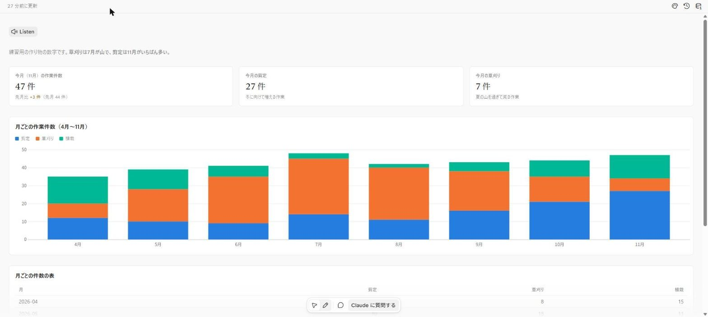
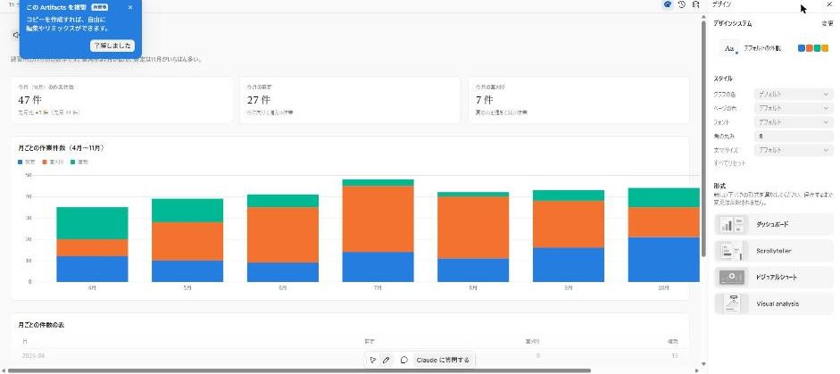
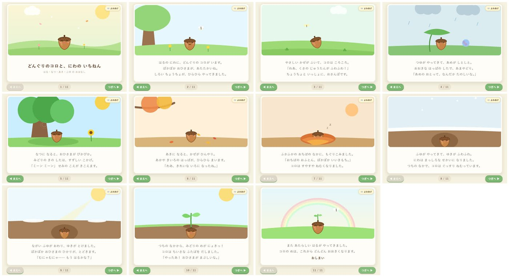
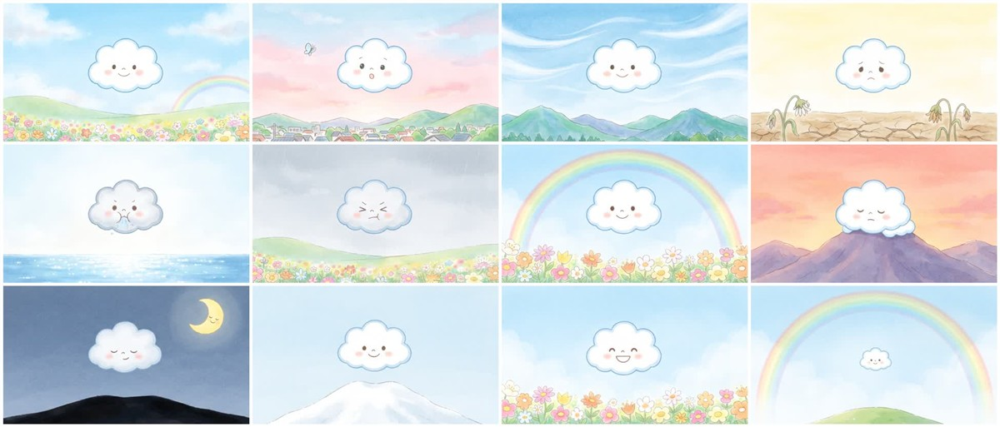

11月28日の成果
Claude の「アーティファクト」（会話の中で作る、開いて使えるページ）の動画3本を AI が分析し、その型で造園の仕事に使える物を4つ作りました。絵はタップすると大きく開きます。
作った物4つ
持ち出し道具のチェック表


朝の積み込みで、トラックに載せた道具に✓。「刈る・切る」「片付け」「運ぶ・その他」の3つに分け、何個積んだかを帯で出します。
確かめた事：✓を付けてページを読み込み直しても、✓が残った。
現場の日報帳


- 1件＝日付・現場名・作業した人・やった作業・困り事・疲れ具合（1〜5）・メモ
- 「日報を残す」を押すと、ページの外の保存場所に残り、次に開いた人にも出る
- 同じ現場で2日続けて困り事があると、「困り事が続いた」の印と知らせの帯が出る
確かめた事：例の3件を AI が書き込み、あとから読み返せた。画面の欄から4件目を書いても残り、困り事が続いた現場には印が出た。「見るだけの人」は読めるが書けない（決まりどおり）。
勉強会の段取り書（文書）


元にしたホワイトボード（名前は「Aさん」などの作り物）。

書き直した文書。作者の名前は隠しています。前の日に作ったホワイトボードの付せん35個を AI が読んで、ねらい・7つの段取り・担当の表・予算の表・まだ決めていない事の文書に書き直しました。
分かった事：ボード・表・文書は自動ではつながらない。表の数字を変えても文書は変わらないので、「反映して」と頼んだら AI が全部読み直して直す、という決まりが要る。
造園の月別作業件数




下の絵の右の欄：動画のとおり、ページの形を「ダッシュボード」「Scrollyteller」「ビジュアルショート」「Visual analysis」から選べる欄があった。- 4月〜11月の剪定・草刈り・植栽の件数（作り物）から、積み上げの棒グラフと月ごとの表
- 「今月の合計と先月比」と、草刈りや剪定の山の月の一文を、数字から自動で書く
分かった事：数字は表の式や出どころに持たせ、AI が手で書かない作り。前の日の「足し算は表にさせる」と同じ考え。
Gemini で動く絵本（全11ページ）
どんぐりのコロと、にわの いちねん


どんぐりのコロが、庭の春・夏・秋・冬をすごして芽を出すまでのお話。絵は Gemini の画像（Nano Banana）で描き直し、ずんだもんの声で読み上げます。左上の「じどうで よむ」で、自動でページがめくれます。
分かった事：1回目は13か所で絵が左上へ飛んで見えなかった。原因を書いて Gemini に直させると直った（ちょうちょの羽だけは手で1行直した）。
動く絵本を開く 音が出ます（こえ：VOICEVOX:ずんだもん ／ え：Gemini（Nano Banana））。3回目の版です。1回目は図形だけの絵、2回目でスマホの縦の画面の字の折れを直しました。ちいさな くもの モクと、にじの はし


朝の空で生まれた小さな雲のモクが、山をこえ、海で水をすって大きくなり、かわいた畑に雨をふらせて虹をかけるお話（全11ページ）。夜は三日月の下で眠り、冬には雪をふらせます。1冊目で決まった作り方（絵4場面×3枚を切り分け・ずんだもんの声・「じどうで よむ」）を、そのまま使って作りました。
2冊目を開く 音が出ます（こえ：VOICEVOX:ずんだもん ／ え：Gemini（Nano Banana））。ファイルは 1.9MB あるので、開くまで少しかかります。まだ確かめていない事
- 「Claude に質問する」のボタンはあったが、押していない
- 形式の欄で、実際にページの形を切り替える所